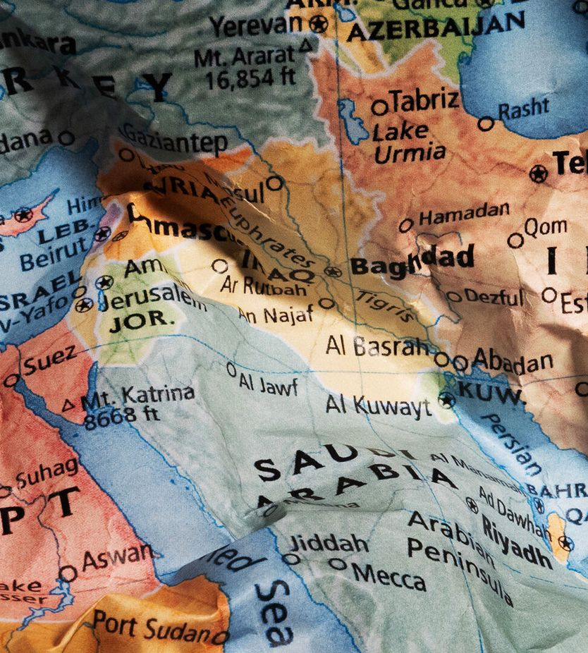

2027年中东战事会少一些，但离真正的和平还很远
There will be less war in the Middle East in 2027—but little real peace
与伊朗的战争将重塑地区政治、安全与能源格局

- 中期选举惨败让特朗普在国内受挫，这本身就是2027年中东少打一些的理由；但少打不等于和平，零碎停火与武装对峙会长期并存。
- 两种剧本都可能上演：伊朗因经济困顿让步，换来一份满是漏洞的协议让总统宣布胜利；或者受创的特朗普为挽回声望再启空袭，伊朗则袭击海湾邻国的能源设施。
- 海湾国家处境最难：美国后撤让它们失去保护伞，只能去别处找安全保障，又被沙特与阿联酋的竞争拖住；绕开霍尔木兹的管道和替代航线越多，解决根本问题的压力反而越小。
本文作者乔西·德拉普，本刊中东编辑。
与伊朗的对抗，历来能左右远在千里之外的政治。近半个世纪前，德黑兰人质危机是吉米·卡特在1980年大选中败给罗纳德·里根的推手之一。如今伊朗的强硬派又想记一功：共和党在中期选举中惨败，部分原因正是选民反感唐纳德·特朗普对伊朗的战争。总统在国内的政治麻烦，是人们对2027年中东战事减少抱有期待的理由之一；以色列的新政府可能是另一个。但没有全面战争，并不等于和平。
过去一年既显示了美以军事力量的强大，也像他们此前多场战争那样，暴露了其限度。战场上的压倒性优势并没有转化为政治解决。2027年，与伊朗的战争将继续动摇人们对地区力量平衡与安全的许多固有假设。而在这一切推算中，特朗普仍是那张不确定的牌。
假设总统被国内的败绩敲醒，搁置再次空袭伊朗的计划；伊朗经济破败、急需解除制裁，于是作出让步：开放霍尔木兹海峡，同意就其核计划“谈谈怎么谈”。特朗普赶忙扑向一份协议。协议零碎、满是漏洞，没人指望它能持久，也没人相信它能真正约束伊朗的核计划。但它能让总统宣布胜利——而且，那不是战争。
这很可能发生。但总统同样可能荡向另一边。在他那套“自选冒险”式的中东政策里，受创又恼怒的特朗普会认定，一场戏剧性的军事胜利是挽回声望的最好办法。他再次放出美军，猛打军事与民用目标。伊朗则以攻击海湾邻国回应，打掉能源设施，破坏关键民用基础设施。
再度挨打，反而给这个招人憎恨的伊朗政权添了声势。其统治者既无意与被削弱的特朗普妥协，也懒得改善伊朗民众的处境。对霍尔木兹海峡的控制是笔会折旧的资产，但伊朗会尽可能久地榨取它——袭击油轮，搅乱全球能源市场。
任何新的战火都合本雅明·内塔尼亚胡的心意——他已不是以色列总理，却仍在暗处活动。他继续敲战鼓，好让安全议题始终占据政治辩论的中心，也保住自己的政治生命。新的少数派政府被证明无力把他赶下政治舞台。以色列陷入政治瘫痪。加沙重建依旧毫无进展。由加迪·艾森科特领导的政府试图压住约旦河西岸定居者的暴力，却无意认真处理以色列与巴勒斯坦人的关系。这届政府更担心与美国关系恶化，却又修不好。
这也同样可能。但无论战事是否重启，海湾国家都会忧心旁观。美国持续从地区霸主角色上后撤，会让它们暴露在风险中。它们会劝特朗普不要再打伊朗，但也得承认自己影响力有限。它们的应对是去别处寻找安全保障（但不是靠扩大与以色列的《亚伯拉罕协议》）。沙特与阿联酋的竞争会让这件事更难。随着阿曼、卡塔尔各自与伊朗做交易，地区分歧会更深。
沙特王储穆罕默德·本·萨勒曼的处境会格外尴尬。沙特将付出一笔高昂代价去安抚胡塞武装——这支受伊朗支持的叛军一直在袭击其机场和能源设施——但这份交易很可能崩掉。王储改造王国的计划，靠的是把投资、企业和游客吸引到一个承诺稳定与繁荣的国家；而持续、难以预测的危险正威胁这一愿景。对他判断力的质疑会增加，不过不会出现对其统治的直接挑战。
海湾的政府和企业会为霍尔木兹找到更多、更好的替代通道：投资管道、替代贸易路线和其他绕开海峡的办法。这会让它们的经济更有韧性，却也让地区不稳定的病根更持久——因为寻找长久解决方案的紧迫感被缓解了。
来年战事会少一些，这值得欢迎。但零敲碎打的停火、武装对峙和临时拼凑的经济绕行方案，带不来持久和平。曾经不可想象的事——美以空袭伊朗、伊朗袭击油轮和基础设施——如今已让人觉得寻常。中东只能与不确定性共处。那些本可以真正终结战事的人，并不认为这样做符合自己的利益。于是剩下的是一种阴沉的僵持，间或穿插威胁、冲突骤起，以及断断续续的外交尝试。